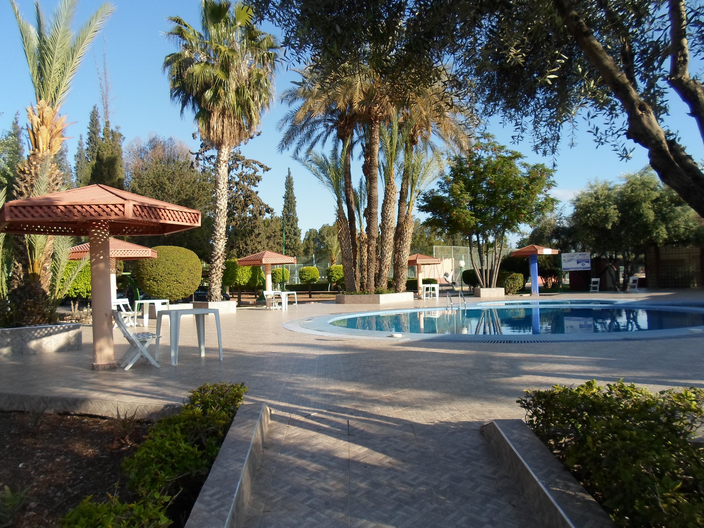

Take a look below for an overview of the services that we provide
If you have a project that you would like to get started, contact us today to get a free quote!
Turfing
Surrey Landscape Co works with the finest quality lawn turf and is laid fresh from cultivating. We offer a wide range of different types of grass to match every garden need and budget.
We guide you on the best type of grass to use based on your garden, undertake full site preparation, lay the grass and advise you on the aftercare to make sure it continues to look great for years to come.
No matter how hot or wet the weather is, we have the required experience to make sure the turf is successfully installed to last.
Grade of Grass
Prestige High-quality
Traditional
Shade Resistant
HIGH QUALITY TOPSOIL
High quality topsoil is key to successfully maintaining your new lawn Turf and keeping it in great condition. We therefore take care to source the best topsoil with all the nutrients and drainage qualities you need.
Quality topsoil in bulk bag (800 - 1000 litres):
Fine loam topsoil
Multipurpose blended
Economy
Soil improver
Woodchip
Decking
We build decks in many shapes and sizes and using a variety of materials. Real wood is great but we also like composite decking. If you are someone who will maintain your decking then wood is for you, on the other hand; if you are someone who would rather have very low to no maintenance composite is a perfect choice.
Our decks can be at ground level or raised. We can also add balustrades and lighting for a fully custom look.
Fencing
Whether it’s a repair or a total new install we have you covered. We can offer advice on the different options available and can even customize fencing to the exact needs of your garden. On top of the install we also offer a staining or painting service for your new fence.

Patios
There are so many things to consider when installing a patio but we have you covered here as well. From drainage to protection of your new patio our experts will talk you through all the steps of your project.
With so many stones to choose from we can help with picking with info on the care they require, strength and even the textures as these things can all have an effect on the final look and feel of your project.
Wooden Structures
We create beautiful and bespoke wooden garden structures, designed to personalize your landscape. From sleeper beds of different shapes and sizes to pergola's, gazebo's, shed's or other wooden structures.
Our passion for wood drove us to develop so many projects over the years. Please do contact us to speak about your plan so we can work together on a design that matches your requirements.
.png "Surrey Landscape Co")